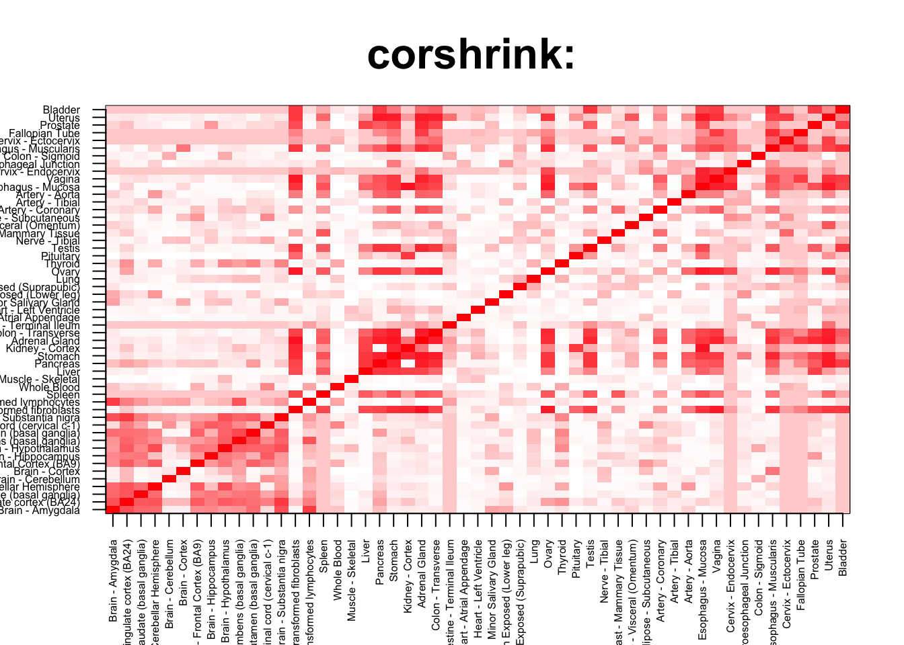
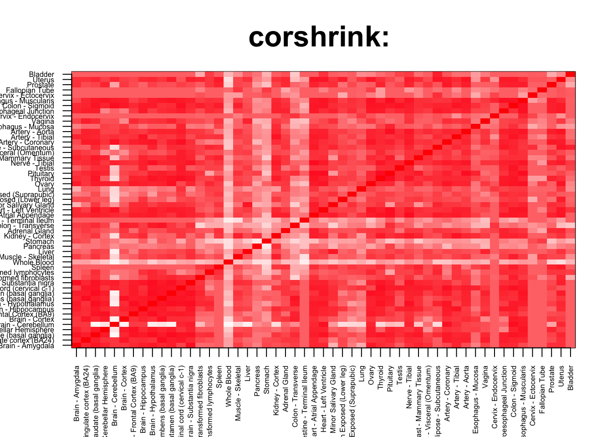
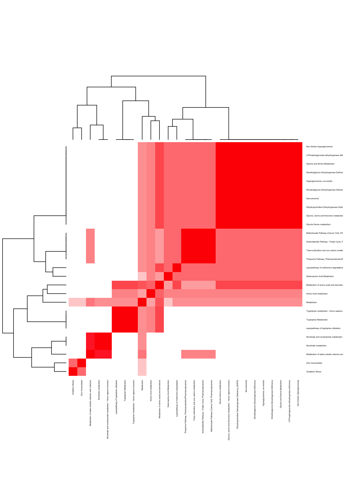

rm(list=ls())
corshrink_data <- get(load("../output/ash_cor_only_voom_pearson_halfuniform_gtex_tissues.rda"))
cor_data <- get(load("../output/cor_tissues_non_ash_voom_pearson.rda"))common_samples <- get(load("../output/common_samples.rda"))
tissue_labels <- read.table(file = "../data/GTEX_V6/samples_id.txt")[,3]
#library(data.table)
#data <- data.frame(fread("../data/GTEX_V6/cis_gene_expression.txt"))
#matdata <- t(data[,-c(1,2)])
gene_names <- as.character(read.table(file = "../data/GTEX_V6/gene_names_GTEX_V6.txt")[,1])
gene_names_1 <- as.character(sapply(gene_names, function(x) return(strsplit(x, "[.]")[[1]][1])))
U <- unique(tissue_labels)tab <- array(0, dim(corshrink_data)[3])
stomach_pancreas_set <- match(c("Stomach", "Pancreas"), U)
for(m in 1:dim(corshrink_data)[3]){
temp <- corshrink_data[stomach_pancreas_set, stomach_pancreas_set, m]
temp1 <- corshrink_data[order_index[-(1:13)], order_index[-(1:13)],m]
tab[m] <- median(temp[row(temp) > col(temp)]) - median(temp1[row(temp1) > col(temp1)])
}
ordering_high <- order(tab, decreasing = TRUE)[1:100]
ordering_low <- order(tab, decreasing = FALSE)[1:100]top_gene <- gene_names_1[ordering_high[1]]
col=c(rev(rgb(seq(1,0,length=1000),1,seq(1,0,length=1000))),
rgb(1,seq(1,0,length=1000),seq(1,0,length=1000)))
image(as.matrix(corshrink_data[order_index,order_index, ordering_high[1]]),
col=col, main=paste0("corshrink: "), cex.main=2,
xaxt = "n", yaxt = "n", zlim=c(-1,1))
axis(1, at = seq(0, 1, length.out = 53), labels = U[order_index], las=2, cex.axis = 0.5)
axis(2, at = seq(0, 1, length.out = 53), labels = U[order_index], las=2, cex.axis = 0.5)
bottom_gene <- gene_names_1[ordering_low[1]]
col=c(rev(rgb(seq(1,0,length=1000),1,seq(1,0,length=1000))),
rgb(1,seq(1,0,length=1000),seq(1,0,length=1000)))
image(as.matrix(corshrink_data[order_index,order_index, ordering_low[1]]),
col=col, main=paste0("corshrink: "), cex.main=2,
xaxt = "n", yaxt = "n", zlim=c(-1,1))
axis(1, at = seq(0, 1, length.out = 53), labels = U[order_index], las=2, cex.axis = 0.5)
axis(2, at = seq(0, 1, length.out = 53), labels = U[order_index], las=2, cex.axis = 0.5)
high_stomach_pancreas_genes <- gene_names_1[ordering_high]
low_stomach_pancreas_genes <- gene_names_1[ordering_low]
write.table(cbind.data.frame(high_stomach_pancreas_genes), quote = FALSE, file = "../utilities/stomach_pancreas/high_stomach_pancreas.txt", row.names = FALSE, col.names = FALSE)
write.table(cbind.data.frame(low_stomach_pancreas_genes), quote = FALSE, file = "../utilities/stomach_pancreas/low_stomach_pancreas.txt", row.names = FALSE, col.names = FALSE)tab <- read.delim("../utilities/stomach_pancreas/pathway_high.tab")
head(cbind.data.frame(tab$pathway, tab$q.value), 10)## tab$pathway
## 1 Striated Muscle Contraction
## 2 Striated Muscle Contraction
## 3 Gene Expression
## 4 Positive epigenetic regulation of rRNA expression
## 5 RNA Polymerase I Promoter Clearance
## 6 RNA Polymerase I Transcription
## 7 ERCC6 (CSB) and EHMT2 (G9a) positively regulate rRNA expression
## 8 Tight junction - Homo sapiens (human)
## 9 RNA Polymerase I, RNA Polymerase III, and Mitochondrial Transcription
## 10 Epigenetic regulation of gene expression
## tab$q.value
## 1 6.557453e-06
## 2 8.544633e-05
## 3 3.218885e-03
## 4 9.163677e-03
## 5 9.163677e-03
## 6 9.163677e-03
## 7 1.670503e-02
## 8 1.670503e-02
## 9 1.988971e-02
## 10 1.988971e-02pathway2 <- read.delim("../utilities/stomach_pancreas/pathway_high.tab")
maxpath = 75
pathway <- pathway2[1:min(maxpath, dim(pathway2)[1]), ]
ensembl_genes <- pathway$members_input_overlap
pathway_list_genes <- sapply(ensembl_genes, function(x) return(strsplit(as.character(x), "; ")))
all_genes <- Reduce(union, pathway_list_genes)
pathway_mat <- matrix(0, length(pathway_list_genes), length(all_genes))
for(l in 1:dim(pathway_mat)[1]){
pathway_mat[l, match(pathway_list_genes[[l]], all_genes)] <- 1
}
pathway_bimat <- (pathway_mat)%*%t(pathway_mat)
pathway_bimat_prop <- diag(1/sqrt(diag(pathway_bimat)), dim(pathway_bimat)[1]) %*% pathway_bimat %*% diag(1/sqrt(diag(pathway_bimat)), dim(pathway_bimat)[1])
col=c(rev(rgb(seq(1,0,length=1000),1,seq(1,0,length=1000))),
rgb(1,seq(1,0,length=1000),seq(1,0,length=1000)))
heatmap(pathway_bimat_prop, labRow = pathway$pathway, labCol = pathway$pathway, cexRow = 0.3, cexCol = 0.3, col = col, zlim = c(-1,1),
scale = "none", margins = c(5, 5))tab <- read.delim("../utilities/stomach_pancreas/GO_high.tab")
head(cbind.data.frame(tab$term_name, tab$q.value), 10)## tab$term_name tab$q.value
## 1 intracellular part 4.649242e-06
## 2 actin-mediated cell contraction 3.372853e-05
## 3 actin filament-based movement 1.527648e-04
## 4 intracellular 1.356017e-05
## 5 muscle myosin complex 3.254466e-05
## 6 nucleoplasm 6.929917e-05
## 7 sarcomere 3.254466e-05
## 8 intracellular organelle 1.895428e-05
## 9 contractile fiber part 2.728568e-05
## 10 poly(A) RNA binding 5.580100e-05tab <- read.delim("../utilities/stomach_pancreas/pathway_low.tab")
head(cbind.data.frame(tab$pathway, tab$q.value), 10)## tab$pathway tab$q.value
## 1 Selenoamino Acid Metabolism 0.01626532
## 2 Antimetabolite Pathway - Folate Cycle, Pharmacodynamics 0.01626532
## 3 Methotrexate Pathway (Cancer Cell), Pharmacodynamics 0.01626532
## 4 Tryptophan Metabolism 0.01626532
## 5 superpathway of methionine degradation 0.01626532
## 6 Metabolism 0.01626532
## 7 Nicotinate metabolism 0.01626532
## 8 Amino Acid metabolism 0.01626532
## 9 3-Phosphoglycerate dehydrogenase deficiency 0.01626532
## 10 Non Ketotic Hyperglycinemia 0.01626532pathway2 <- read.delim("../utilities/stomach_pancreas/pathway_low.tab")
maxpath = 75
pathway <- pathway2[1:min(maxpath, dim(pathway2)[1]), ]
ensembl_genes <- pathway$members_input_overlap
pathway_list_genes <- sapply(ensembl_genes, function(x) return(strsplit(as.character(x), "; ")))
all_genes <- Reduce(union, pathway_list_genes)
pathway_mat <- matrix(0, length(pathway_list_genes), length(all_genes))
for(l in 1:dim(pathway_mat)[1]){
pathway_mat[l, match(pathway_list_genes[[l]], all_genes)] <- 1
}
pathway_bimat <- (pathway_mat)%*%t(pathway_mat)
pathway_bimat_prop <- diag(1/sqrt(diag(pathway_bimat)), dim(pathway_bimat)[1]) %*% pathway_bimat %*% diag(1/sqrt(diag(pathway_bimat)), dim(pathway_bimat)[1])
col=c(rev(rgb(seq(1,0,length=1000),1,seq(1,0,length=1000))),
rgb(1,seq(1,0,length=1000),seq(1,0,length=1000)))
heatmap(pathway_bimat_prop, labRow = pathway$pathway, labCol = pathway$pathway, cexRow = 0.3, cexCol = 0.3, col = col, zlim = c(-1,1),
scale = "none", margins = c(5, 5))
tab <- read.delim("../utilities/stomach_pancreas/GO_low.tab")
head(cbind.data.frame(tab$term_name, tab$q.value), 10)## tab$term_name tab$q.value
## 1 cellular amino acid metabolic process 0.005360514
## 2 pyridine-containing compound biosynthetic process 0.003970295
## 3 alpha-amino acid biosynthetic process 0.003970295
## 4 alpha-amino acid metabolic process 0.016202428
## 5 cellular amino acid biosynthetic process 0.016202428
## 6 serine family amino acid metabolic process 0.011425886
## 7 organic acid biosynthetic process 0.023458740
## 8 carboxylic acid biosynthetic process 0.012331775
## 9 coenzyme metabolic process 0.023458740
## 10 S-adenosylhomocysteine metabolic process 0.025189460This R Markdown site was created with workflowr